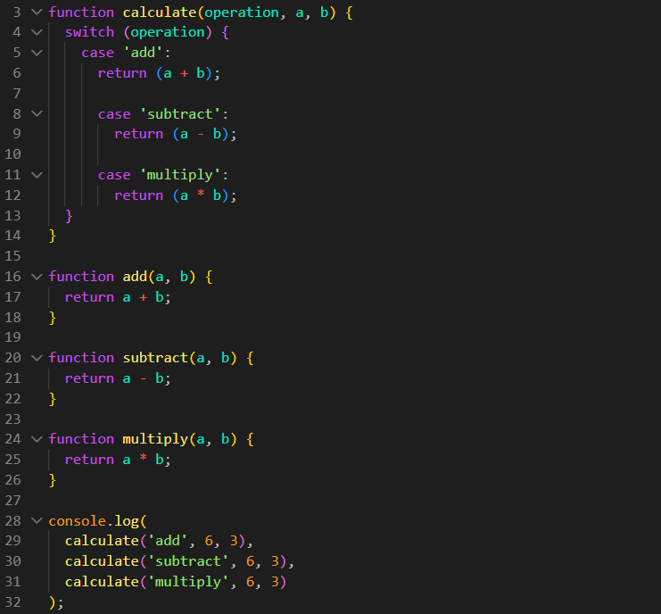
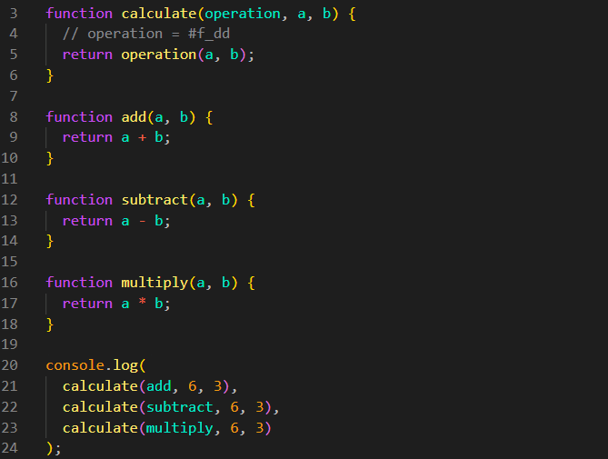

Callbacks
Intro
Iremos nos aprofundar mais em funcoes.
Iremos nos aprofundar mais em funcoes.
JS:

Criamos uma funcao chamada calculate, para realizar adicao e subtracao, para isso passamos o operador desejado em forma de string e dois valores. Ficando da seguinte forma:
function calculate(operation, a, b) {
swicth (operation) {
case 'add':
return (a + b);
case 'subtract':
return (a - b);
case 'multiply':
return (a * b);
}
}
function add(a, b) {
return a + b;
}
function subtract(a, b) {
return a - b;
}
function multiply(a, b) {
return a * b;
}
console.log(
calculate('add', 6, 3),
calculate('subtract', 6, 3),
calculate('multiply', 6, 3),
)

Dessa forma fizemos uma calculadora, porem ela não é muito flexivel, toda vez que desejamos adicionar um operador novo, temos que adicionar uma nova funcao e switch.
Uma opcao que podemos estar executando, é remover nosso parametro de string e adicionar a propria funcao para ser executada, ficando da seguinte forma:
function calculate(opertion, a, b) {
return operation(a, b);
}
function add(a, b) {
return a + b;
}
function subtract(a, b) {
return a - b;
}
function multiply(a, b) {
return a * b;
}
console.log(
calculate(add, 6, 3),
calculate(subtract, 6, 3),
calculate(multiply, 6, 3)
);

Fazendo dessa forma, nao precisos do switch, o operation funciona como se fosse uma referencia. Quando desejamos o resulto ja nao usamos strings mas a propria funcao. O mais importante é seguir a ordem dos parametros.
Dessa forma fica de forma mais flexivel, se desejamor usar um novo operador, basta criarmos apenas a nova funcao. Podendo ate mesmo passar uma arrow function:
console.log (
calculate(add, 6, 3),
calculate(subtract, 6, 3),
calculate(multiply, 6, 3),
calculate((a, b) => a / b),
)